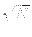
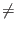

Next: Operator to Create Equal
Up: Grover's Algorithm
Previous: An Illustration of Grover's
Contents
To prove that Grover's algorithm successfully finds the unique marked
state in
O() operations we must show the following:
- That there is a operator to produce a equal superposition of states
for part 1 of the algorithm. This operation is well known and referred
to as the Walsh-Hadamard operator.
- That there is a operator to rotate the phase of a given state.
- That the definition of the matrix A :
Aij = 2/N if
i j
and
Aii = - 1 + 2/N is an inversion about average operator.
- That the matrix representations of all operators used are unitary. If
this is the case then these transformations are physically realizable.
- That repeated applications of step 2 of the algorithm increase the
amplitude of the marked state, such that after
O()
iterations the probability of measuring the marked state is at least
1/2.
Next: Operator to Create Equal
Up: Grover's Algorithm
Previous: An Illustration of Grover's
Contents
Matthew Hayward - Quantum Computing and Grover's Algorithm GitHub Repository